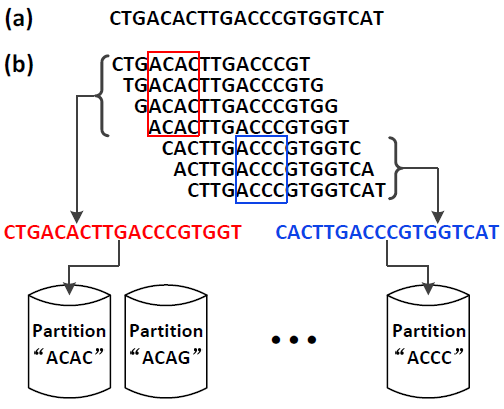

A major challenge in next-generation genome sequencing (NGS) is to assemble massive overlapping short reads that are randomly sampled from DNA fragments. To complete assembling, one needs to finish a fundamental task in many leading assembly algorithms: counting the number of occurrences of k-mers (length-k substrings in sequences). The counting results are critical for many components in assembly (e.g. variants detection and read error correction). For large genomes, the k-mer counting task can easily consume a huge amount of memory, making it impossible for large-scale parallel assembly on commodity servers. In this work, we develop MSPKmerCounter, a disk-based approach, to efficiently perform k-mer counting for large genomes using a small amount of memory. Our approach is based on a novel technique called Minimum Substring Partitioning (MSP). MSP breaks short reads into multiple disjoint partitions such that each partition can be loaded into memory and processed individually. By leveraging the overlaps among the k-mers derived from the same short read, MSP can achieve astonishing compression ratio so that the I/O cost can be significantly reduced. For the task of k-mer counting, MSPKmerCounter offers a very fast and memory-efficient solution. Experiment results on large real-life short reads data sets demonstrate that MSPKmerCounter can achieve better overall performance than state-of-the-art k-mer counting approaches.
Algorithm Overview
Minimum Substring Partitioning comes from the intuition that two adjacent k-mers are very likely to share the same minimum p-substring if p << k, since there is a length-(k-1) overlap between them. Figure below shows a Minimum Substring Partitioning example. In this example, the first 4 k-mers have the same minimum 4-substring, ACAC, as highlighted in red box; and the last 3 k-mers share the same minimum 4-substring, ACCC, as highlighted in blue box. In this case, instead of generating all these 7 k-mers separately, we can just compress them using the original short read. Namely, we compress the first 4 k-mers to CTGACACTTGACCCGTGGT, and output it to the partition corresponding to the minimum 4-substring ACAC. Similarly, the last 3 k-mers are compressed to CACTTGACCCGTGGTCAT and outputted to the partition corresponding to the minimum 4-substring ACCC. Generally speaking, given a short read s = s1s2 ... sn, if the adjacent j k-mers from s[i; i + k - 1] to s[i + j - 1; i + j + k - 2] share the same minimum p-substring t, then we can just output substring sisi+1 ... si+j+k-2 to the partition corresponding to the minimum p-substring t without breaking it to j individual k-mers. If j is large, this compression strategy will dramatically reduce the I/O cost.

For more details about the algorithm and the performance issues, please refer to the documents